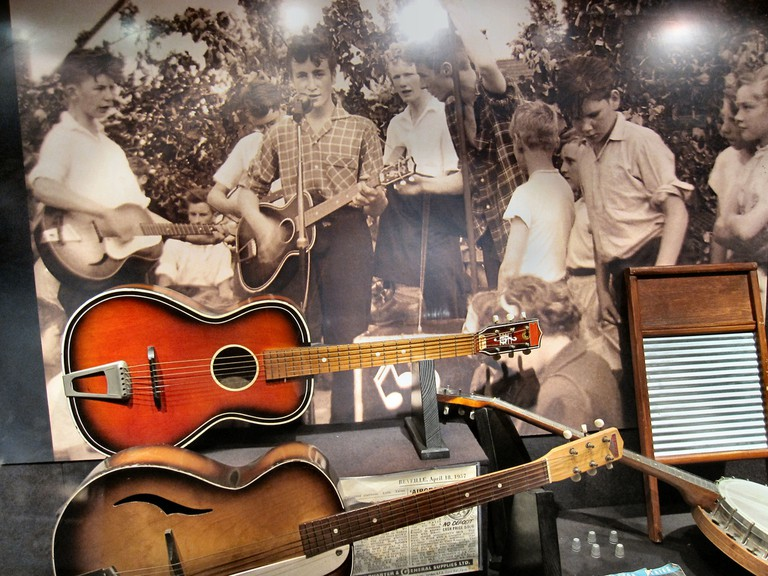

A Brief History of The Beatles
The history behind Liverpool’s most famous sons The Beatles is quite something. From their first encounters, tours of the world and subsequent break-up; read on to delve in to a brief account of the world’s most famous band. Early history & Hamburg residency
Little did we know that the musical world was about to flip on its head when a 15 year-old Paul McCartney met a 16 year-old John Lennon in 1957. Lennon, in his skiffle band The Quarrymen, invited McCartney to join the group on rhythm guitar, with the band later inviting George Harrison and original bass player Stuart Sutcliffe to join.
Following a string of concerts in Liverpool, The Beatles’ first manager Allan Williams (original owner of local venue The Jacaranda) arranged a residency in Hamburg for the band, which would see original Beatles drummer Pete Best join the band. 1961 saw Sutcliffe leave the band – with McCartney replacing him on bass. Following criticism, Best would be also be replaced by a young Ringo Starr a year later.
Following a string of concerts in Liverpool, The Beatles’ first manager Allan Williams (original owner of local venue The Jacaranda) arranged a residency in Hamburg for the band, which would see original Beatles drummer Pete Best join the band. 1961 saw Sutcliffe leave the band – with McCartney replacing him on bass. Following criticism, Best would be also be replaced by a young Ringo Starr a year later.

UK popularity & first single
When The Beatles returned to the UK in 1961 after a number of performances in Hamburg, they were at the fore of the city’s ever-growing Merseybeat scene. Following a run of shows at The Cavern Club, they were spotted by Brian Epstein, who would later go on to become the band’s official manager in 1962. Initially rejected by Decca Records, Epstein would then sign the band to EMI’s Parlophone label and in June initiated their first recording session at Abbey Road Studios.
In October of the same year, The Beatles’ first single ‘Love Me Do’ peaked at Number 17 on the Record Retailer chart. The band would return to Hamburg for their fifth and final residency before returning home with a new look and a promise to be more serious about their music. Serious they were, as they would go on to release 12 studio LPs in an eight year period.
Beatlemania
In 1963, a sharp-suited Beatles would record their first LP Please Please Me, a roaring success in the UK, peaking at number 1 in the charts. Extensive European tours followed, with thousands of fans filling the streets outside venues on a nightly occurrence. The reaction to the band was dubbed Beatlemania. 1964 saw the ‘British Invasion’, with The Beatles hitting USA for the first time. The Ed Sullivan Show played host to their first US television performance, which was a landmark for the band and was watched by approximately 73 million viewers in the States.